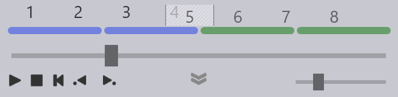
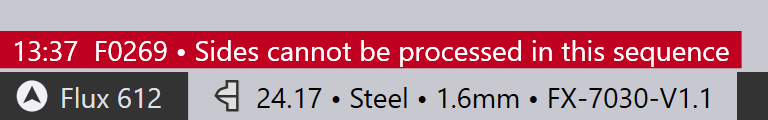

Ændring af rækkefølgen
Der er to måder at ændre rækkefølgen, hvorpå sider bearbejdes. En måde er at bruge knappen Redigér rækkefølge i Sidepanelet som forklaret ovenfor. Den anden mere enkle metode er simpelthen at trække afsnittet til en ny placering i Falsenavigator.
-
Klik på et falsetal i falsenavigatoren, og træk det for at ændre rækkefølgen. Den side, der klikkes på, definerer det nøjagtige sæt bukninger, der trækkes. Lad os overveje en del som den nedenfor, der har to korte sider og to lange sider. Rækkefølgen i dette tilfælde er L1 L2 C1 C2:

-
Hvis der klikkes på en af bukningerne i side C1 eller side L1, så trækkes hele den korte side eller hele sættet af lange sider. Så hvis man klikker på bukningerne 1 eller 2 (del af L1) eller bukningerne 5 eller 6 (del af C1), så trækker man 4 bukninger. Her er et billede nedenfor, der viser et træk initieret fra bukning 5; vi trækker nu siderne C1 og C2 (bemærk, hvordan bukningerne 5, 6, 7 og 8 er tonet lidt grå og bevæger sig sammen med musen). Vi kan nu droppe dette før siderne L1 og L2, og dermed ændre rækkefølgen til C1 C2 L1 L2.
 -
Hvis vi begynder at trække siderne L2 eller C2, så trækkes kun den side, og vi kunne bruge dette til at blande de to sider C1 og C2 eller siderne L2 og L2. Vi kunne endda bruge dette til at ændre rækkefølgen til noget som L1 C1 C2 L2 (hvilket som regel ikke vil fungere, men kan være nyttigt i nogle særlige tilfælde). Her er et eksempel, hvor vi trækker siden L2 (bemærk, hvordan bukning 3 og 4 er tonet lidt grå, og bevæger sig sammen med musen):

-
Trækket er designet til at muliggøre det almindelige tilfælde med nem ombytning af de lange og korte sider (CCLL <→ LLCC), samtidig med at det stadig er muligt at ændre rækkefølgen mellem de enkelte sider som C1 og C2. Når rækkefølgen er ændret, beregner TecZone Fold opdateret klargøring, klinger, anslag etc. Det er sandsynligt, at ændringen i rækkefølgen nu kan nødvendiggøre, at ZBW-klinger og ENW-værktøjer skal implementeres (eller det kan medføre, at disse ikke længere er nødvendige). Alle disse ændringer beregnes automatisk.
-
Til tider er rækkefølgen valgt på denne måde måske ikke gennemførlig. Overvej for eksempel nedenstående del med 6 bukninger. Bukningerne 1 og 2 er sammensatte bukninger lavet af flere kollineære segmenter. Hvis vi behandler bukninger 4 eller 6 først, så kan vi ikke behandle bukninger 1 eller 2, da enkelte segmenter vil ikke længere være kollineære.

Hvis man forsøger at ændre rækkefølgen på en sådan måde, at der oprettes en umulig rækkefølge, TecZone Fold ændrer det ikke rækkefølgen, men vil i stedet vise en fejl:
